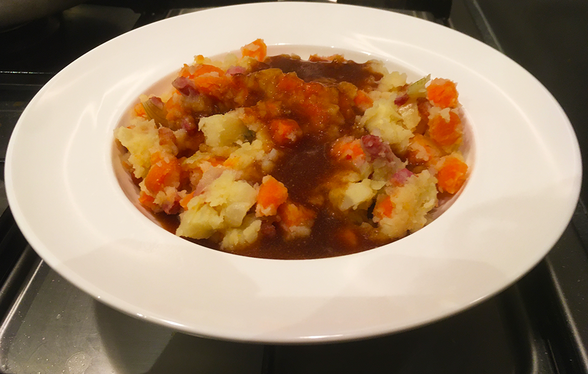

cottage pie

enge aardappels

finse witte kool rolletjes

coq au vin

cubanos

spaghetti carbonara

pasta pesto

zuurvlega

koreaanse bibimbap

italiaanse caponata

kokossoep

hutspot uit eigen land

Bereidingsduur: 60 minuten
Aantal personen: 5
Ingrediënten:
1 kilo aardappels
2 stuks uien
300 gram spekjes
400 gram pastinaak
600 gram wortels
1 zakje jus
1 kilo aardappels
2 stuks uien
300 gram spekjes
400 gram pastinaak
600 gram wortels
1 zakje jus
Instructies:
1. Schil de aardappels en snij de pastinaak, wortels en uien in stukjes, de uien kan je ook in halve plakken snijden. Plaats de aardappels, pastinaak, wortels en uien in een pan en kook ze voor 20 minuten.
2. Bak de spekjes in een koekenpan aan tot ze zo krokant zijn als je zelf wil.
3. Maak voordat alles uitgekookt is de jus klaar volgens de instructie op het pakje (of potje).
4. Stamp de aardappels, uien, pastinaak en wortels door elkaar en voeg de spekjes er aan toe wanneer het goed gemengd is. Let op dat je niet te lang stampt want dan wordt alles te zacht.
5. Vul de borden met de stamppot en schenk er de jus overheen.
1. Schil de aardappels en snij de pastinaak, wortels en uien in stukjes, de uien kan je ook in halve plakken snijden. Plaats de aardappels, pastinaak, wortels en uien in een pan en kook ze voor 20 minuten.
2. Bak de spekjes in een koekenpan aan tot ze zo krokant zijn als je zelf wil.
3. Maak voordat alles uitgekookt is de jus klaar volgens de instructie op het pakje (of potje).
4. Stamp de aardappels, uien, pastinaak en wortels door elkaar en voeg de spekjes er aan toe wanneer het goed gemengd is. Let op dat je niet te lang stampt want dan wordt alles te zacht.
5. Vul de borden met de stamppot en schenk er de jus overheen.